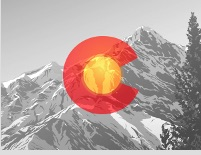
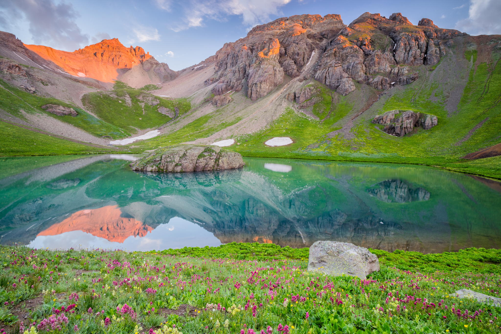
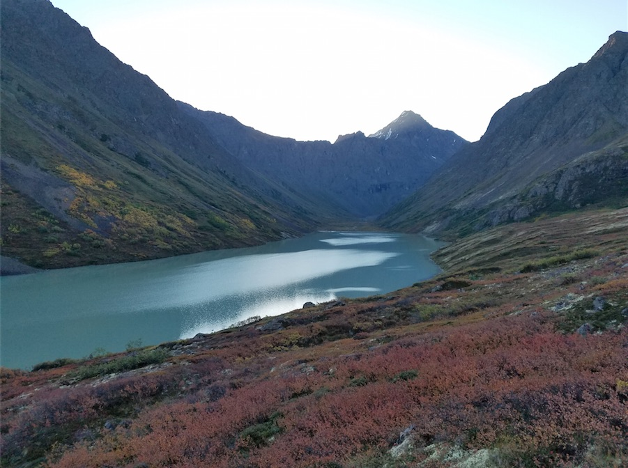
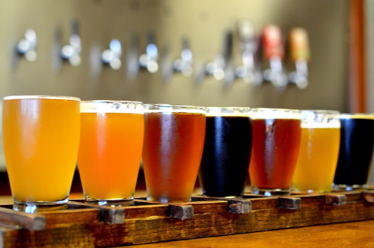

Weekend Fun

Hiking
Colorado offers many great hiking trails for people of all fitness levels. From 14er's to scenic walks in the foothills, there is something for everyone no matter what your level of experience is. Colorado is home to 53 14er's (mountains over 14,000 feet), if you are looking for a challenging but rewarding hike. Other great areas to consider are: Colorado Springs, Boulder, Estes Park, and any major ski resort. Each offers a wide variety of great hikes that are sure to leave you wanting more. Check out the link below for some fun day hiking recommendations in the Denver Metro area!
Click hereBiking Trails

With over 300 days of sunshine a year, Colorado is the perfect place for a biker of any kind (mountain bike or road bike). The weather is always optimal for a bike ride of any kind, and accomodates all skill levels. Denver has more than 85 miles of bike trails for riders to take advantage of and many more mountain bike trails in the surrounding area if you are looking for a fun weekend thrill.
Popular bike trails in Denver include
- Cherry Creek Trail
- South Platte Trail
- High Line Canal Trail
Bike Races and Events
- Tour de Fat
- Elephant Rock Ride
- Rocky Mountain Triple By-Pass
Camping Spots
Colorado State Parks Camping
Forty-two parks all over the state are administered by Colorado State Parks. The system boasts more than 4,000 campsites. Amenities at many parks include restrooms, full electrical hookups and shower facilities, and some even have laundry facilities and playgrounds. Yurts and cabins available for rent offer comfortable, year-round alternatives to traditional camping.
Federal Lands
The US Forest Service manages 14 million acres of land in the state’s 11 National Forests and two National Grasslands, while the Bureau of Land Management oversees an additional 8.4 million acres. Both agencies have campsites that range from developed areas with restrooms, fire rings, water and other amenities to remote areas, with no amenities, that are reached only by horse, mountain bike or backpacking. Reservations can be made at recreation.gov.
Private Campgrounds
There are many privately owned campsites in Colorado, and they often have perks you may not find on public lands, including playgrounds, hot tubs, laundry facilities and Wi-Fi. COLORADO.com campgrounds listings, the Colorado Campground and Lodging Owners Association and Colorado KOA Owners Association are just a few places to make reservations and locate campgrounds. Click below for more information on how to prepare and what to bring when camping in Colorado.
Click hereBreweries
More than 10 percent of the nation’s craft breweries can be found in Colorado, which is quite an impressive statistic given that the state is home to less than 2 percent of the country’s population. Colorado is home to nearly 230 established breweries.
Notable breweries
- New Belgium Brewing Company
- Odell Brewing Company
- Great Divide Brewing
Be sure to check out the Great American Beer Festival at some point while your in Colorado. This is a staple for every beer drinker, with more than 400 of the top craft breweries across the nation. Check out the link below for some goodrecommendations!
Click here